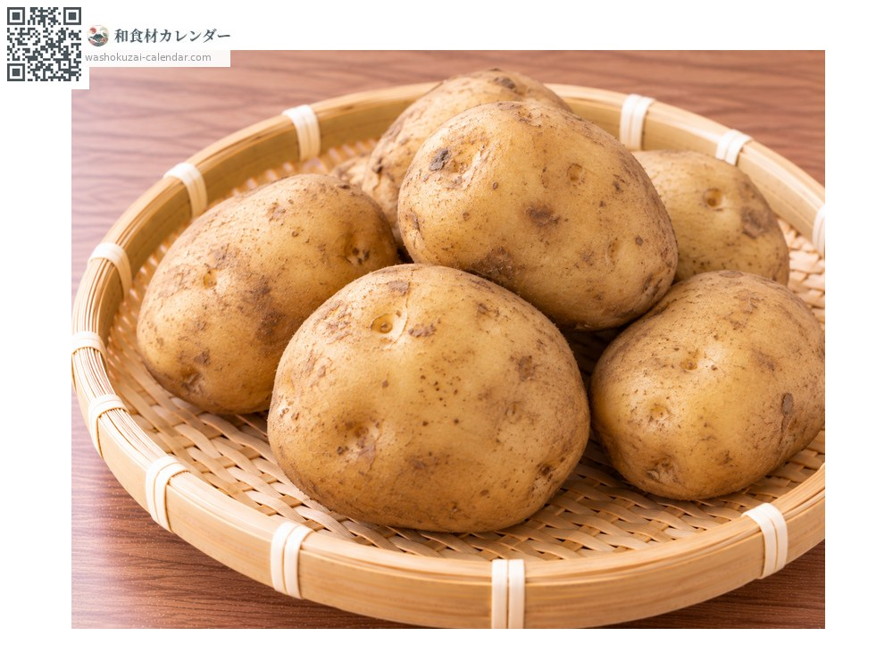
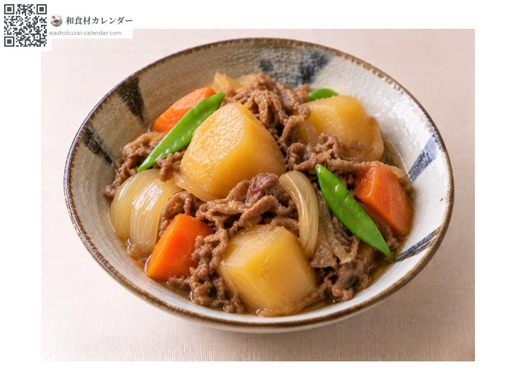
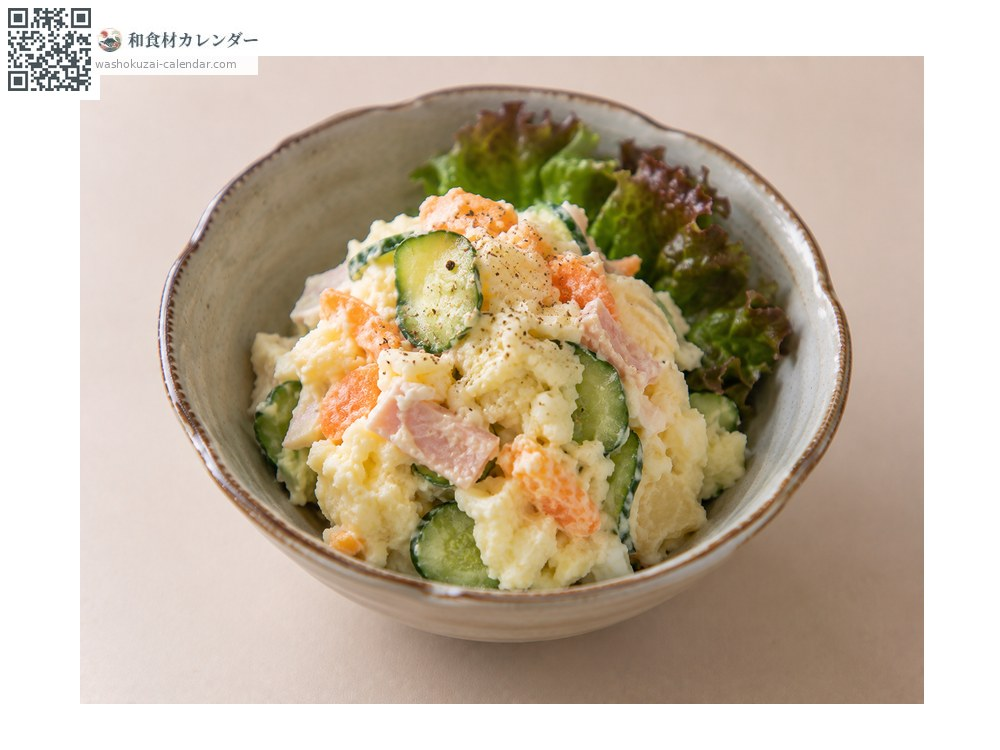
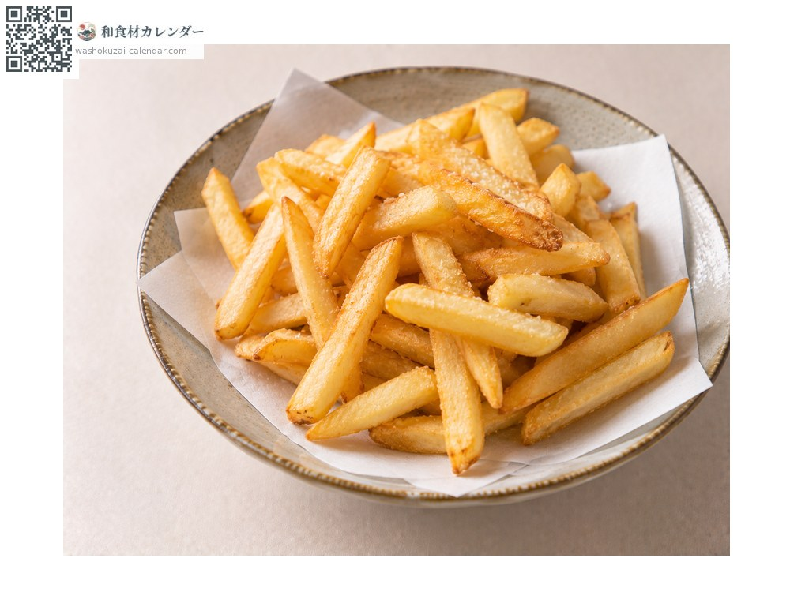
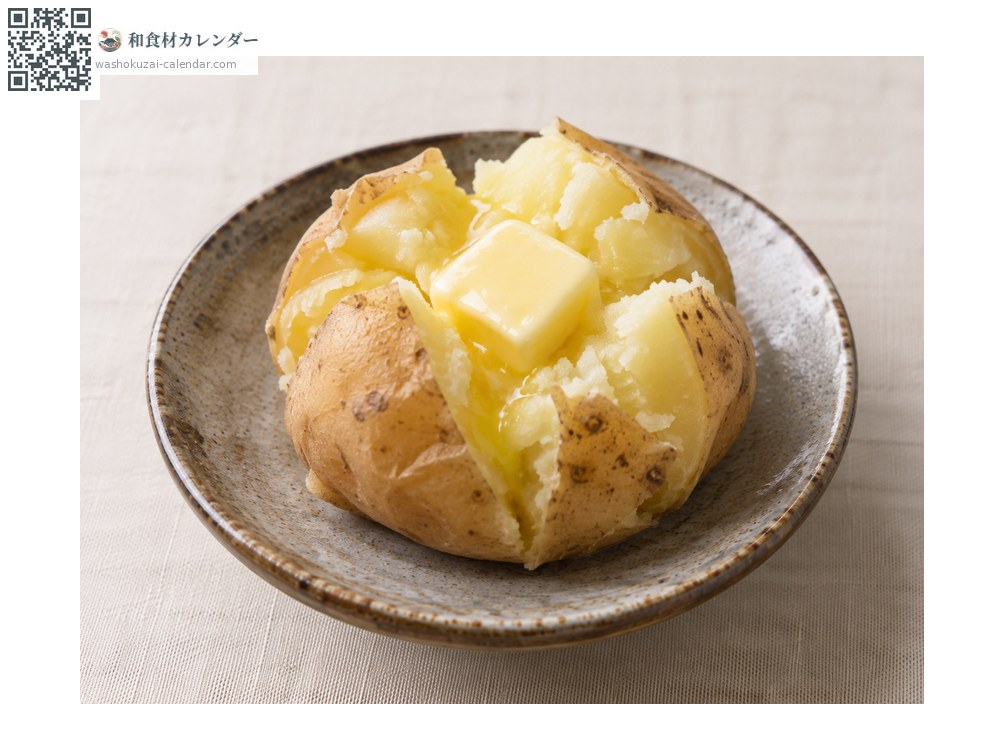

野菜
ジャガイモ
じゃがいも
別名・別表記馬鈴薯、ばれいしょ、jagaimo、bareisho
旬は5月・6月・10月・11月・12月

旬の時期
1月
2月
3月
4月
5月
6月
7月
8月
9月
10月
11月
12月
旬出回り
調理法

肉じゃが
男爵は煮崩れやすく、メークインは形が残る。

ポテトサラダ
粉質の男爵が向く。

フライドポテト
水にさらしてから揚げる。

じゃがバター
蒸して、または焼いて。
選び方
皮に張りがあり、芽が出ていないもの。緑がかったものは避ける。
保存方法
光に当てると緑化するので暗所へ。りんごと一緒に置くと発芽を遅らせられる。
主な産地
豆知識
緑色に変色した部分や芽にはソラニンが含まれるため、しっかり取り除いてから調理する。